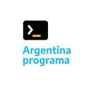

<div class="p-5 mb-4 bg-light rounded-3 animated fadeIn">
    <div class="container-fluid py-5">
        <h1 class="display-5 fw-bold">¡Hola mundo!</h1>

        <p class="col-md-8 fs-4">Mi nombre es Carolina Bima y te cuento un poco más sobre mi:</p>

        <!-- donde vivo -->
        <button type="button" class="btn btn-outline-primary mb-1 col-md-3 mb-3" (click)="showData('dedonde')">¿Dónde
            Vivo?</button>
        <div *ngIf="show[0]" class="card  mb-3 col-md-6">
            <div class="card">
                <iframe
                    src="https://www.google.com/maps/embed?pb=!1m18!1m12!1m3!1d108956.33750546738!2d-64.26135977054385!3d-31.417279312925714!2m3!1f0!2f0!3f0!3m2!1i1024!2i768!4f13.1!3m3!1m2!1s0x9432985f478f5b69%3A0xb0a24f9a5366b092!2zQ8OzcmRvYmE!5e0!3m2!1ses-419!2sar!4v1660140775444!5m2!1ses-419!2sar"
                    width="100%" style="border:0;" allowfullscreen="" loading="lazy"
                    referrerpolicy="no-referrer-when-downgrade"></iframe>
                <div class="card-body">
                    <p class="card-text text-center">Córdoba, Argentina.</p>
                </div>
            </div>
        </div>

        <br>
        <!-- Formación -->

        <button type="button" class="btn btn-outline-primary mb-1 col-md-3 mb-3"
            (click)="showData('formacion')">Formación</button>
        <div *ngIf="show[1]" class="card  mb-3 col-md-12">
            <div class="card">

                <div class="card-body">
                    <div class="card-text text-center">
                        <p> Me encuentro terminando el segundo año de la <strong>Tecnicatura en Desarrollo Web y
                                Aplicaciones
                                Digitales</strong> en el Instituto Superior Politécnico Córdoba.</p>
                        <p>Como parte de mi proceso de aprendizaje he participado de los siguientes cursos
                            <strong>Full-Stack con Java:</strong>
                        </p>
                        <div class="container text-center mb-3">
                            <div class="row">
                                <div class="col">
                                    
                                </div>
                                <div class="col">
                                    
                                </div>
                                <div class="col">
                                    
                                </div>
                            </div>
                            <div class="row">
                                <div class="col">
                                    <strong> #YoProgramo </strong> – Segunda parte del Argentina Programa
                                </div>
                                <div class="col">
                                    <strong>PoloTic</strong> (Misiones)
                                </div>
                                <div class="col">
                                    <strong>Codo a Codo </strong>(Caba)
                                </div>
                            </div>
                        </div>
                        <p class="">Pero estos no son los únicos: podés encontrar un detalle de la temática
                            aprendida en
                            cada uno de ellos y más información sobre mi proceso de formación ingresando a la página de
                            cursos desde el
                            menú superior de la página o haciendo click <a class="link-info"
                                [routerLink]="['/cursos']">acá</a>
                        </p>

                    </div>
                </div>
            </div>
        </div>

        <br>
        <br>
        <br>


        <p class="col-md-8">En cuanto a lo laboral, estoy realizando una pasantía como desarrolladora con Ionic
            en la Dirección de Sistemas del Ministerio de Educación de la Provincia de Córdoba y además trabajo como
            Analista de Help-Desk y Gestión de Incidencias Masivas en Vates Softwate.</p>
        <button class="btn btn-primary btn-lg" type="button">Un Botoncito</button>
    </div>


</div>